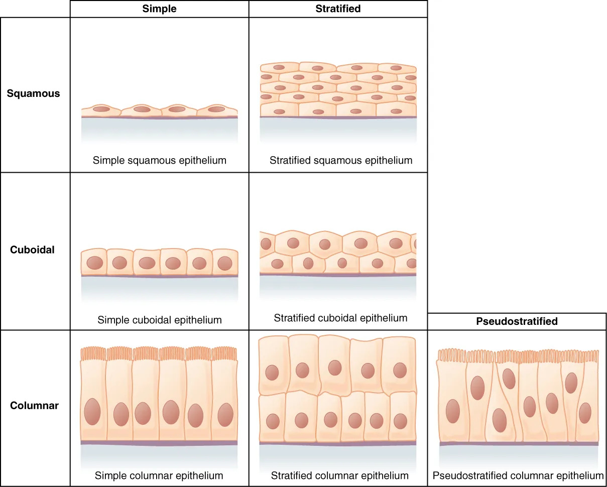

上皮组织由密集的上皮细胞和极少量的细胞间质构成，覆盖身体表面和衬贴管腔内壁。
特点：
分类：被覆上皮、腺上皮、感觉上皮。
四大基本组织的胚层来源（联赛必背对应关系）：
被覆上皮按细胞层数（单层/复层）和细胞形态（扁平/立方/柱状）分类，是覆盖体表和衬贴管腔的主要上皮类型。
| 类型 | 结构特点 | 分布 |
|---|---|---|
| 单层扁平上皮 | 一层扁平细胞 | 肺泡、毛细血管内壁、心室腔面 |
| 单层立方上皮 | 一层立方形细胞 | 肾小管、甲状腺滤泡 |
| 单层柱状上皮 | 一层柱状细胞 | 胃、肠、子宫腔面 |
| 假复层纤毛柱状上皮 | 锥形、梭形、柱状细胞，有纤毛 | 呼吸道腔面 |
| 复层扁平上皮 | 多层细胞，表层扁平 | 皮肤表皮、口腔、食管 |
| 变移上皮 | 细胞层数随器官充盈度变化 | 膀胱、输尿管 |

腺上皮：以分泌功能为主的上皮。以腺上皮为主要成分构成的器官称为腺。
腺按分泌物排出方式分为两类：